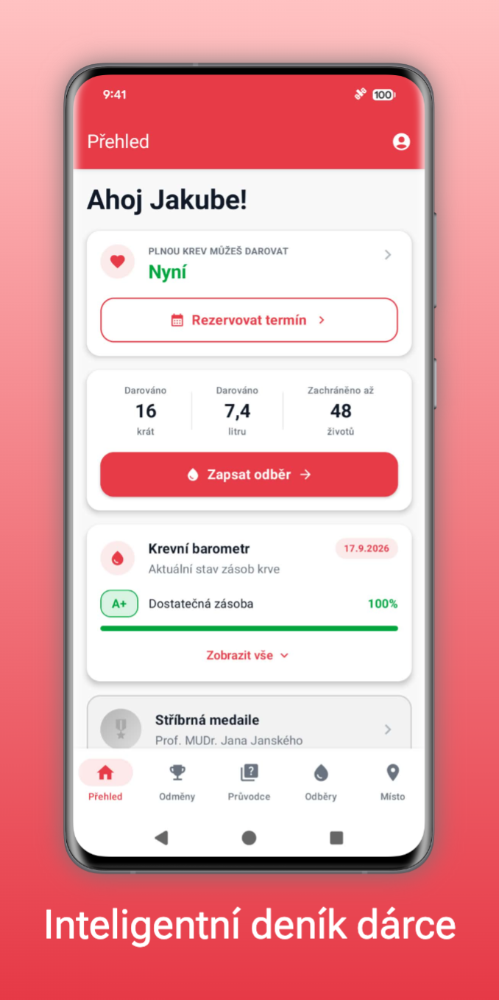
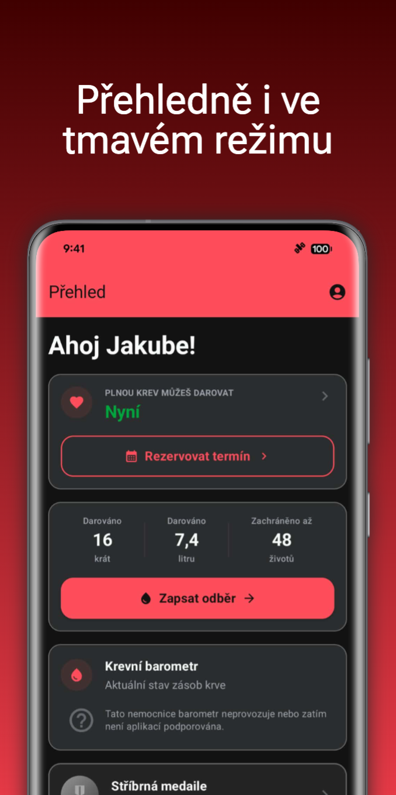
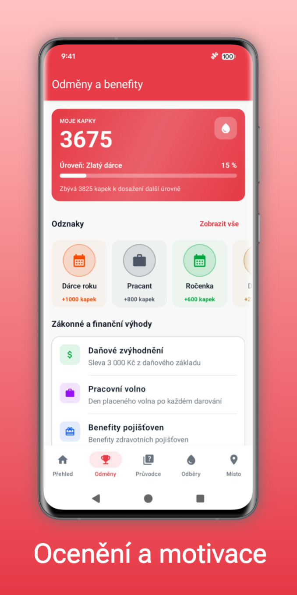
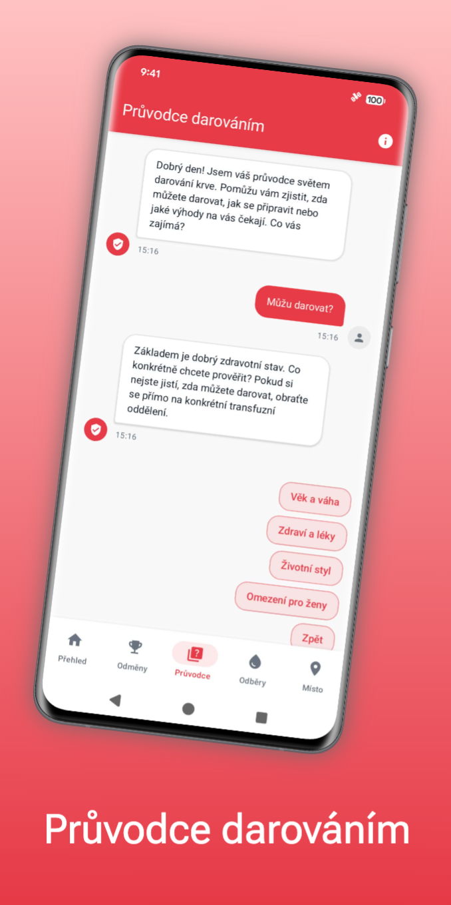
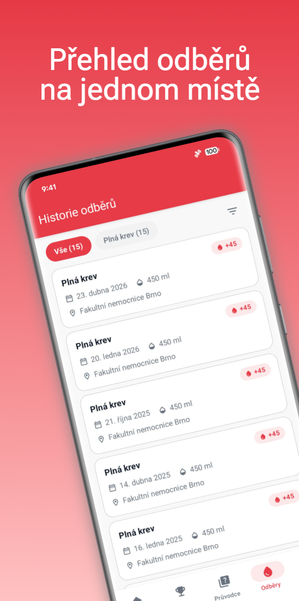
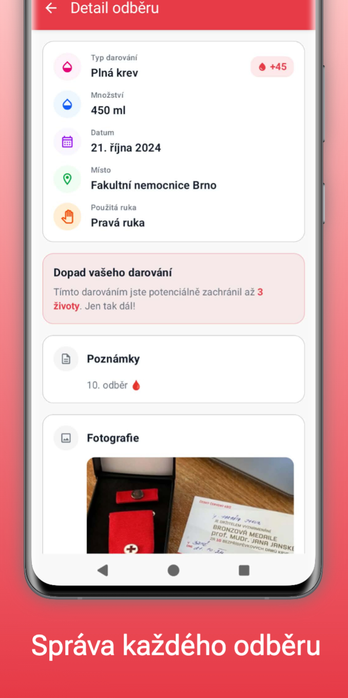
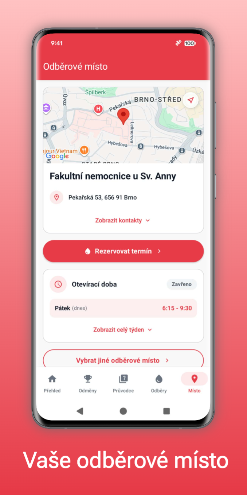
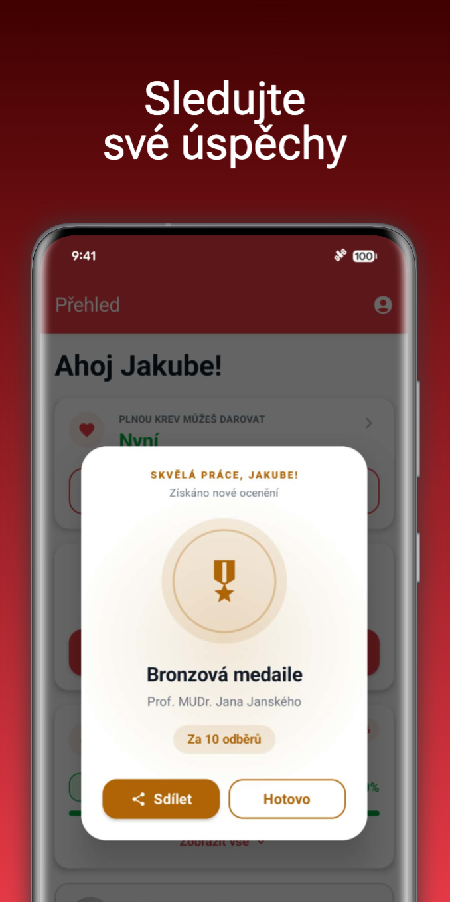

Daruj je komplexní mobilní aplikace navržená pro všechny dárce krve a krevních složek v České republice. Aplikace vám pomůže udržet si přehled o vašich odběrech, motivuje vás k dalším darováním a informuje vás o všem, co potřebujete vědět.
Hlavní funkce
- Inteligentní osobní deník: Přehledná evidence historie absolvovaných odběrů (plná krev, plazma, krevní destičky, červené krvinky) včetně automatického výpočtu termínu dalšího možného darování a podrobných statistik.
- Krevní barometr: Zobrazení orientačního stavu zásob krevních skupin v jednotlivých nemocnicích, který je zajištěn automatizovaným sběrem dat z oficiálních zdrojů.
- Odběrová místa: Kompletní přehled transfuzních oddělení včetně otevírací doby, kontaktů a možnosti volby vlastního primárního odběrového místa.
- Průvodce darováním: Integrovaný průvodce s ověřenou znalostní bází zohledňující metodické materiály Českého červeného kříže a transfuzních stanic v ČR.
- Gamifikace a ocenění: Sledování pokroku na cestě k medailím Českého červeného kříže, sbírání odznaků a motivace dárce.
- Digitální dotazník a legislativa: Cvičný dotazník způsobilosti a ucelený přehled o zákonných právech dárce (pracovní volno, daňové odpočty) a benefitech zdravotních pojišťoven.
- 100% Soukromí: Aplikace funguje primárně offline. Veškerá data jsou uložena výhradně v zabezpečeném lokálním úložišti zařízení.
Galerie








Pro koho je aplikace určena?
Daruj je tu jak pro prvodárce, kteří chtějí mít jistotu, že jsou na svůj první odběr připraveni, tak pro zkušené dárce, kteří si chtějí vést přehlednou historii a mít po ruce všechny důležité informace.
Stáhněte si Daruj a přidejte se ke komunitě, která zachraňuje životy.